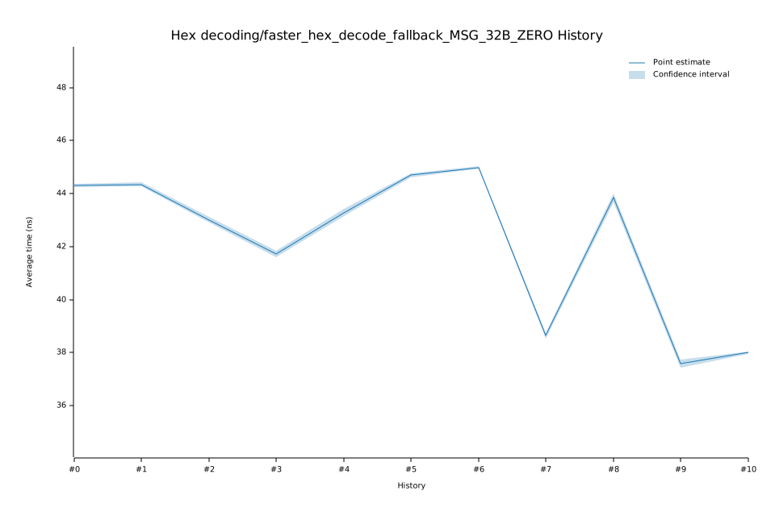

# 42023-02-09T13:07:38Z
|
Lower Bound |
Estimate |
Upper Bound |
| Value: |
43.14ns |
43.28ns |
43.43ns |
| Change in Value: |
+3.0577% |
+3.4842% |
+3.9109% |
No change in performance detected.
# 32023-02-08T19:15:29Z
|
Lower Bound |
Estimate |
Upper Bound |
| Value: |
41.59ns |
41.71ns |
41.85ns |
| Change in Value: |
-3.3403% |
-2.9050% |
-2.4347% |
No change in performance detected.
# 22022-12-05T09:03:06Z
|
Lower Bound |
Estimate |
Upper Bound |
| Value: |
42.91ns |
43.01ns |
43.14ns |
| Change in Value: |
-3.2132% |
-2.8840% |
-2.4490% |
No change in performance detected.
# 12022-11-14T12:18:40Z
|
Lower Bound |
Estimate |
Upper Bound |
| Value: |
44.28ns |
44.35ns |
44.43ns |
| Change in Value: |
-0.0072% |
+0.2358% |
+0.4748% |
Change within noise threshold.
# 02022-11-04T13:55:50Z
|
Lower Bound |
Estimate |
Upper Bound |
| Value: |
44.24ns |
44.31ns |
44.37ns |